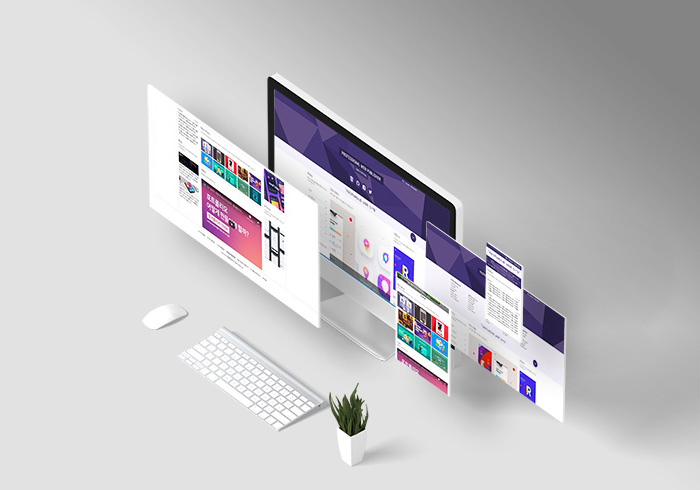
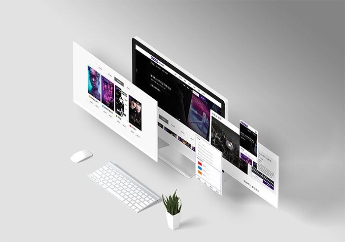
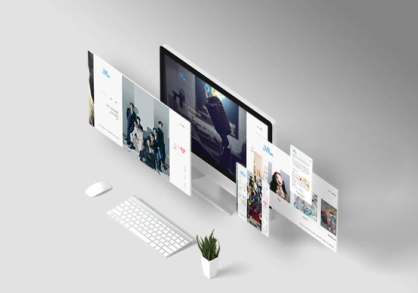

PAKU
contents
I am MarkUp Engineer
M
Y
P
O
R
T
F
O
L
I
O
4 sites
6 animations
새로운 변화가 끊임없이 일어나는 웹 환경에서 최신 트렌드에 뒤처지지 않기 위해 스터디 모임과 세미나에 많이 참여하여 핵심 사이트를 벤치마킹하고 업무 시간 외에도 꾸준히 부족한 부분과 유행하는 기술들을 공부 하여 자기개발에 힘쓰겠습니다. 또한, 최신기술과 크리에이티브한 아이디어로 끊임없이 소통하고 함께 고민하며 나날이 성장 하는 퍼블리셔가 되겠습니다.
웹에 관심이 많았던 저는 웹디자인을 배우는 과정에서 처음으로 코딩을 접하게 되었습니다. 배워보지도 못한 영역이라 처음엔 개념이 안 잡혀있어서 어려웠지만, 매일매일 메모장에 그날의 수업을 웹 수업 1일 차, 2일 차 이렇게 적어가며 네이버 클라우드에 저장해 집에서도 복습했습니다. 그렇게 배우다 보니 코딩의 매력에 빠져 퍼블리셔라는 직업을 알게 되었습니다.
div를 가운데 정렬하는 방법이 다양한 것처럼, 수학도 풀이과정은 다양하지만, 답은 정확한것처럼 수학을 좋아하는 저는 코딩도 똑같다 생각이 들어 코딩이 좋아졌습니다. 디자인보다 코딩이 더 좋아진 퍼블리셔가 되기 위해 저는 웹 반응형, 제이쿼리를 추가로 수강하며 강사님이 추천해주신 책도 사서 공부하기 시작했습니다.
그 후, 포트폴리오 반을 두달간 수강해 4개의 사이트 중 하나인 JYP 사이트를 만들었습니다.

포트폴리오 제작 시 차별화를 주고 싶어 마우스 휠 동작을 넣고 싶었습니다. 그러나 수업시간에 배우지 않은 내용이어서 구현을 할 수 없었습니다. 포기하지 않고 검색엔진을 활용해 검색, 관련 책을 구매해 공부했습니다. 혼자 해결하기 힘들 경우에 강사님께 수업이 끝난 후 물어봤습니다. 보다 빨리 제작하기 위해 학원이 끝나면 집에서도 꾸준히 3시간 이상 만들었습니다.
그 결과 마우스 휠 동작을 사용한 웹 사이트를 만들었고 강사님께서는 열심히 과제를 해왔던 과정을 칭찬해 주셨고 베스트 퀼리티 포트폴리오로 선정될 수 있었습니다. 이러한 경험으로 새로운 사이트를 만들기 위해 도전을 두려워하지 않고 적극적으로 하겠습니다.
또한, 아직 부족한 부분이 많다 생각하여 스터디 모임에 참여했습니다. 하루 8시간씩 공부하며 나머지 3개의 사이트와 메인 포트폴리오를 제작했습니다. 저처럼 추가적으로 포트폴리오를 만들고 공부를 하기 위한 분들도 계셨지만 이미 취업하신 분들도 더 공부 하기 위해 참여하신 분들도 계셨습니다.
모르는 점과 궁금한 점을 물어보며 같이 공부도 하니 혼자 했을 때의 막막함이 사라지고 좋았습니다. 이렇게 취업 후에도 스터디 모임과 세미나에 많이 참여하여 업무 시간 외에도 꾸준히 부족한 부분과 유행하는 기술들을 공부하여 멈춰있는 것이 아닌 계속해서 성장하는 퍼블리셔가 되겠습니다.
my skill level
M
Y
S
K
I
L
L
L
E
V
E
L
80%
Photoshop85%
Html590%
CSS375%
jQuery'배움에는 끝이 없다' 라는 말이 있듯이 공부도 100% 라는 완벽한 수치는 없다고 생각합니다. 그렇지만 100%에 근접할 수 있도록 틈틈이 비는 시간을 이용해 배웠던것도 복습하고 새로운 것들을 공부하여 차근차근 퍼블리셔 업무에 대한 저만의 전문성과 경쟁력을 갖추겠습니다.
Project
PROJECT 01
WEB STANDARD
웹 표준 지침서를 준수하여 코딩한 웹표준 사이트 입니다. 또한 모든 사용자가 이용에
불편이 없도록 대체 텍스트로 웹 접근성을 고려하였습니다. slick을 이용한 배너와
라이트박스 생성 플러그인을 사용하여 배너와 이미지에 동적인 부분을 더했습니다.
SITE VIEW
SITE VIEW
PROJECT 02
WEB RESPONSIVE
디바이스 종류에 따라 유연하게 화면을 변경할 수 있는 반응형 사이트입니다.
HTML5의 “미디어 쿼리”를 이용하여 디바이스 환경에 맞추어 메뉴, 슬라이드,
탭, 동영상, 마우스오버 등 동적인 효과를 주었습니다.
SITE VIEW
SITE VIEW
PROJECT 03
MEGABOX SITE
메가박스 사이트입니다. 디자인은 디바이스별 그리드 시스템을 이용해
포토샵 작업을 하였고, Swiper플러그인을 이용한 배너와 차트 탭
스크립트를 특징으로 한 반응형 사이트입니다.
SITE VIEW
SITE VIEW
PROJECT 04
MEGABOX SITE
메가박스 사이트입니다. 디자인은 디바이스별 그리드 시스템을 이용해
포토샵 작업을 하였고, Swiper플러그인을 이용한 배너와 차트 탭
스크립트를 특징으로 한 반응형 사이트입니다.
SITE VIEW
SITE VIEW



Animation
Effect
I can apply various
animations to websites.
01
Wave Animation
CSS animation을 이용한 물결 애니메이션입니다. SVG 이미지를 가로만 반복되게
한 후 상위박스를 overflow:hidden으로 가려준 뒤에 animation 0~100% 동안
이미지의 절반만큼을 margin-left로 밀어내 자연스러운 물결 효과를 줬습니다.
CODE VIEW
02
Text Animation
CSS를 이용한 글씨 안에 눈오는 애니메이션입니다. 텍스트의 안쪽을
fill-color: transparent로 투명하게 만든 후 background-clip: text로 설정해
배경이미지를 텍스트로 넣은 후 CSS 애니메이션으로 background-position을 바꿨습니다.
CODE VIEW
PAKU
03
3D Animation
CSS transform을 이용한 3d 이미지박스 애니메이션입니다. 3개의 div에 가상요소를
써서 6개의 이미지를 채우고 rotate 와 transformZ 를 사용해 정육면체를 만든 다음
animation으로 rotateX,Y값을 바꿔 정육면체를 회전 시켰습니다.
CODE VIEW
04
Border Animation
CSS animation을 이용한 border 애니메이션입니다. 4개의 span을 회전시키고
애니메이션 50%때까지는 scaleX 0~1 ,기준점 left 를 줘서 선이 늘어나는 효과를
50.1%부터는 scaleX 1~0 기준점 right로 줘서 선이 줄어드는 효과를 줬습니다.
CODE VIEW
05
Hover Animation
CSS hover를 이용한 애니메이션입니다. 호버했을때 이미지의 색을 원래대로 보이게
하고 파란색 원은 transform: scale을 사용해 키웠습니다. 또한, 숨어있던
화살표와 SNS 아이콘들은 delay를 다르게 줘서 차례대로 보이는 효과를 줬습니다.
CODE VIEW
Vauxhall
a lonely trip.06
Mouse Animation
TweenMax를 이용한 마우스 방향에 따라 움직이는 글씨 애니메이션입니다.
각각 2개의 div와 텍스트를 width: 50%로 만든 후 변수 x의 값을 clientX를
사용해 구한후 변수x를 x좌표의 값으로 줘서 텍스트가 따라다니게 했습니다..
CODE VIEW
PAKUHYUNJU
PAKUHYUNJU